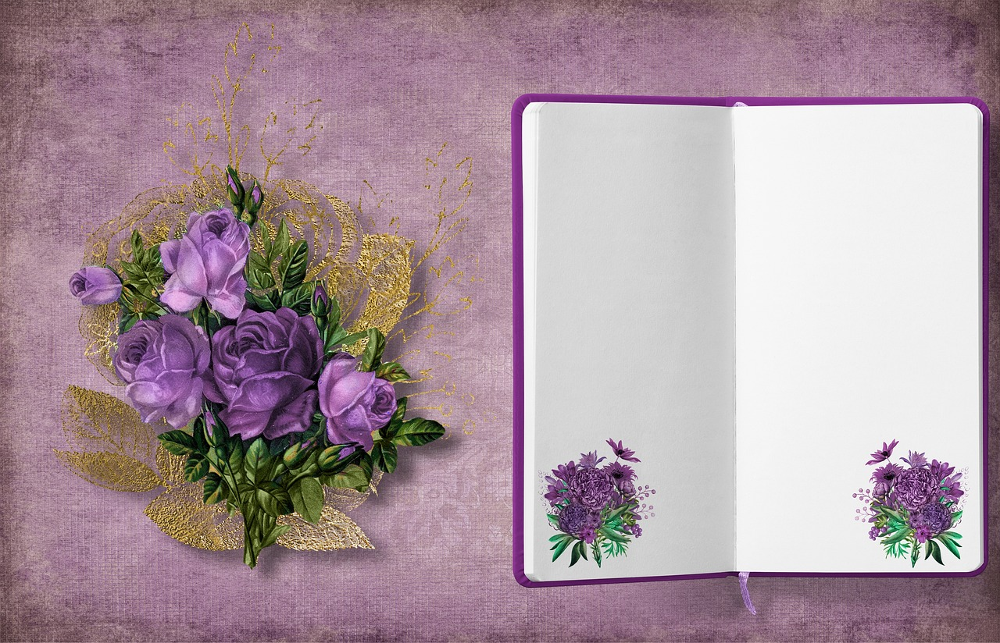

In the labyrinth of time, where memories intertwine, my electronic diary stands as a guardian of cherished moments. With the touch of fingertips, it unveils a digital canvas, capturing fragments of my existence. Organized and accessible, it becomes the gateway to an ethereal realm, where thoughts, dreams, and aspirations find solace.
Within this digital sanctuary, stories unfold, intertwining the past and present. It cradles a kaleidoscope of emotions, preserving laughter, tears, and whispers of the heart. Each entry whispers secrets, confessions, and musings, an intimate reflection of my soul. A symphony of words dances across its virtual pages, creating a harmonious blend of memories.
With the passage of time, my electronic diary becomes a treasure trove, a journey through the tapestry of life. Its boundless expanse captures the essence of my being, offering solace, inspiration, and a canvas for self-expression. From triumphs to trials, it stands as a faithful companion, witnessing the symphony of my existence, etching indelible marks upon the fabric of time.
Thus, in the realm of digital ink, my electronic diary is an exquisite tapestry, intricately woven with the threads of my life. It serves as a sanctuary for memories, emotions, and dreams, embracing the whispers of my heart and forever resonating with the echoes of my soul. Symphony of Memories, my electronic diary, is a timeless testament to the beauty of self-expression and the power of introspection.
Love's artistic masterpiece crafted.